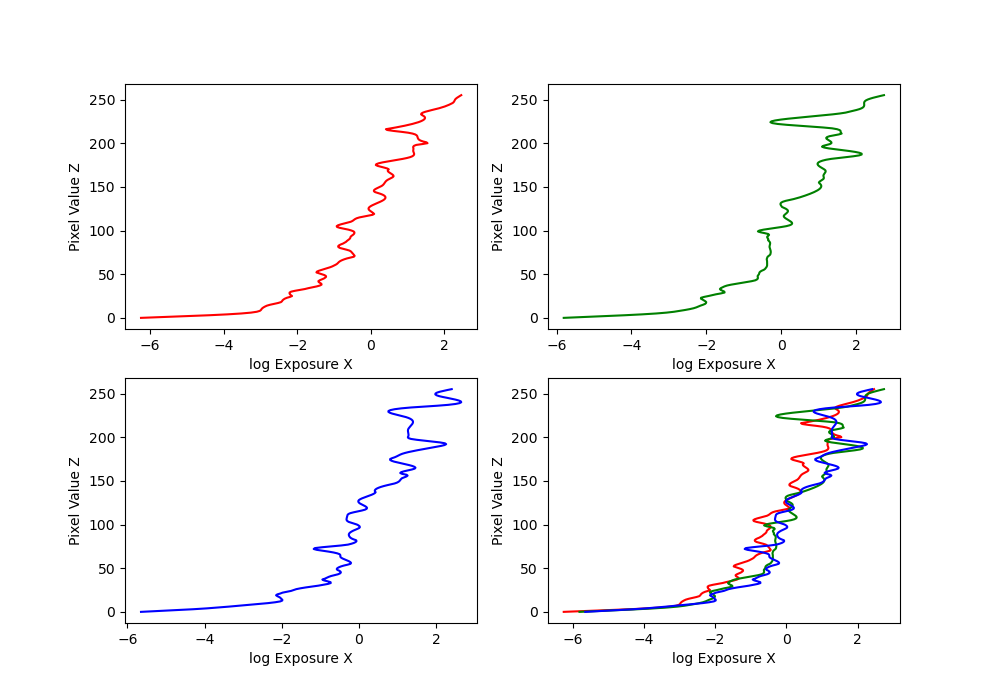
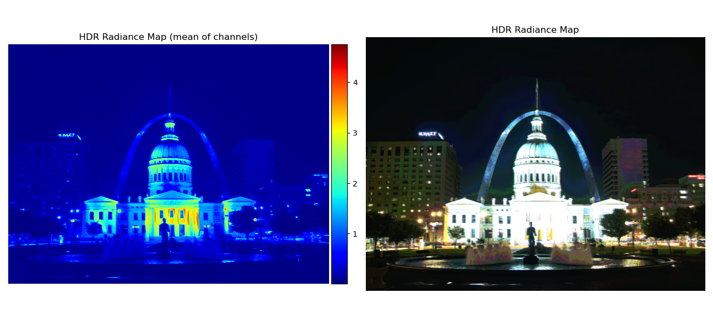
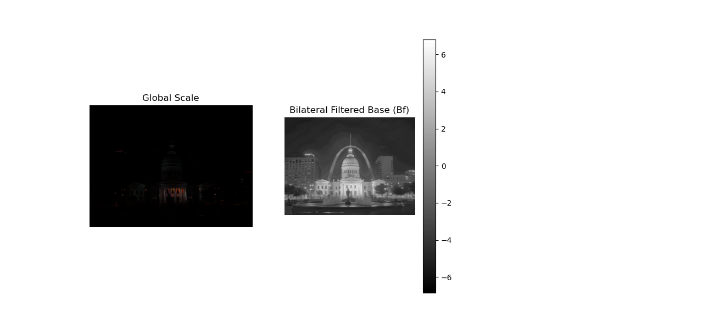
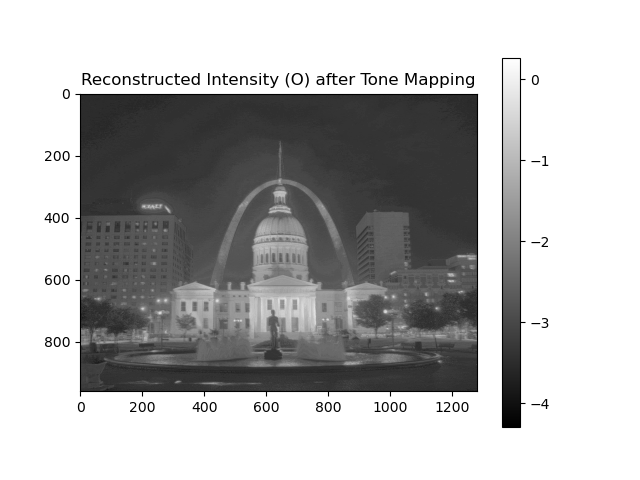
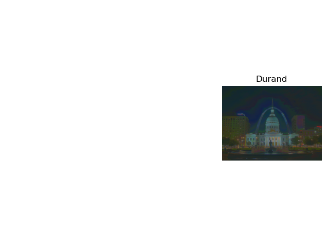

This figure shows the relationship between pixel values (Z) and the corresponding log exposure (X). It is derived from the camera response function estimation step.
This image represents the constructed High Dynamic Range radiance map derived from multiple low dynamic range exposures. It combines information from multiple images to recover the scene's true radiance values.
Here we show the effect of simple global scaling applied to the HDR image and the result after applying a bilateral filter to separate the image into base and detail layers.
This image shows the result after applying a tone mapping operator to the HDR image, compressing its dynamic range into a visually pleasing format suitable for display on standard monitors.
This image demonstrates the locally-based tone mapping approach following Durand (2002). Using bilateral filtering and dynamic range compression, it preserves details and achieves a more balanced appearance across the scene.
